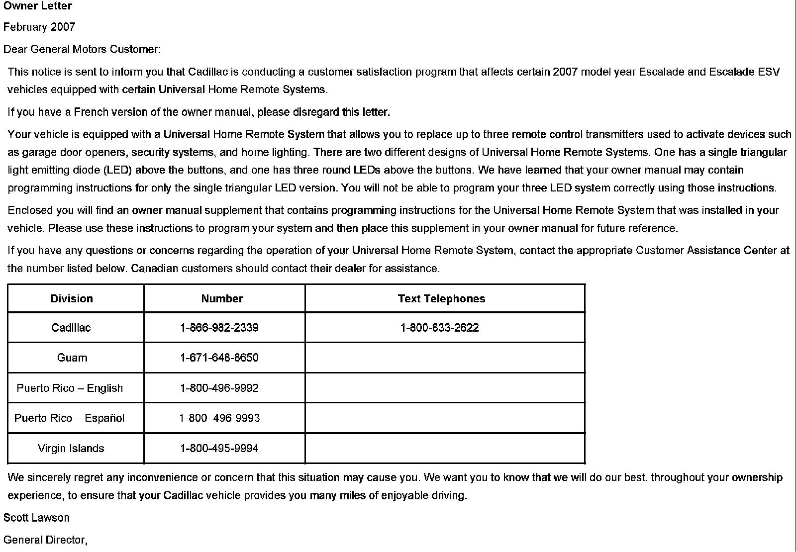

Operation CHARM
: Car repair manuals for everyone.
Home
>>
Cadillac
>>
2007
>>
Escalade ESV AWD V8-6.2L
>>
Repair and Diagnosis
>>
Accessories and Optional Equipment
>>
Garage Door Opener Transmitter
>>
Technical Service Bulletins
>>
All Technical Service Bulletins
>>
Campaign - Home Remote System Programming Instructions
>>
Owner Letter
Owner Letter
